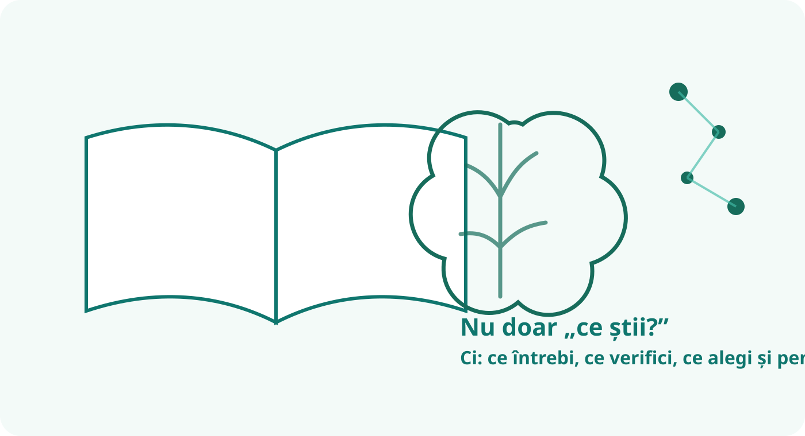

Sistemul de învățământ românesc: între potențial și blocaje
Dacă ar fi să dăm o notă întregului sistem de învățământ românesc, ce am evalua de fapt? Profesorii? Școlile? Echitatea? Rezultatele? Capacitatea sistemului de a se adapta? O singură cifră simplifică inevitabil realitatea, dar poate deschide o discuție utilă.
De ce este atât de greu să dai o singură notă?
Dacă ar fi să dau o notă învățământului românesc ca sistem, aș fi tentat să nu dau o singură cifră, pentru că ar fi ca și cum ai nota o orchestră după ce ai ascultat doar vioara întâi. Are zone foarte bune și zone care scârțâie serios.
O școală bine condusă, cu profesori stabili, părinți implicați și resurse suficiente poate oferi unui copil o experiență educațională foarte bună. O altă școală poate funcționa în condiții mult mai dificile. Media dintre ele spune ceva despre sistem, dar nu spune totul despre fiecare școală.
De ce nota nu este mai mică?
- Avem încă profesori foarte buni, care se implică mult peste fișa postului.
- Există școli și comunități unde rezultatele sunt excelente.
- Olimpiadele, performanța academică și unele licee de top arată că există mult potențial.
- România continuă să formeze absolvenți care se descurcă foarte bine în universități și medii profesionale competitive.
De ce nota nu este mai mare?
- Diferențele dintre școli sunt mari. Experiența elevului depinde prea mult de locul în care învață.
- Există încă prea mult accent pe reproducere și examen și prea puțin pe autonomie, aplicare și gândire critică.
- Birocrația consumă energie care ar putea fi investită în elev și în dezvoltarea școlii.
- Formarea continuă a profesorilor există, dar calitatea și impactul ei sunt inegale.
- Evaluarea nu surprinde întotdeauna suficient de bine progresul real al elevului.
- Problemele sociale intră inevitabil în școală: sărăcie, migrație, lipsa sprijinului familial și vulnerabilități locale.
Fișa de evaluare
Și aceste note sunt tot aprecieri calitative ale GPT. Ele nu trebuie citite cu precizia unui catalog, ci ca o hartă a zonelor în care sistemul pare mai puternic sau mai vulnerabil.

Ce se află în spatele acestor note?
Profesorii pot ridica sistemul peste propriile lui limite
Una dintre marile resurse ale școlii românești este faptul că există profesori care transformă o structură imperfectă într-o experiență educațională valoroasă. Un profesor bun poate crea curiozitate, poate construi încredere și poate schimba traiectoria unui elev chiar și atunci când instituțiile din jur funcționează greu.
Dar tocmai aici apare și o problemă: un sistem sănătos nu ar trebui să depindă excesiv de eroismul individual. Calitatea educației ar trebui să fie robustă și atunci când profesorul este bun, dar nu excepțional, când familia nu are resurse suplimentare sau când școala nu se află într-un centru urban privilegiat.
Excelența nu este același lucru cu echitatea
Existența unor elevi extraordinari, a unor profesori remarcabili și a unor școli de elită demonstrează că sistemul poate produce performanță. Nu demonstrează însă că oferă aceleași șanse tuturor.
Școala pregătește pentru examen. Dar pregătește suficient pentru viață?
Examenele sunt necesare și cunoștințele solide contează. Problema apare atunci când examenul devine centrul gravitațional al învățării. Într-o lume în care informația este abundentă și AI poate produce explicații, texte și soluții în câteva secunde, valoarea educației se mută treptat spre capacitatea de a înțelege, verifica, argumenta, conecta idei și lua decizii.
Birocrația nu este doar o neplăcere administrativă
Fiecare oră consumată pentru documente cu utilitate redusă este o oră care nu ajunge în pregătirea unei lecții, într-o discuție cu un elev, în colaborarea dintre profesori sau în dezvoltarea strategică a școlii. Birocrația devine astfel o problemă educațională, nu doar una administrativă.
Motor puternic, transmisie veche
Partea interesantă este că problema României nu mi se pare că este lipsa oamenilor capabili. Avem profesori buni, elevi buni și directori buni. Problema este că sistemul seamănă uneori cu un motor puternic pus într-o mașină cu multe piese vechi: motorul poate, dar transmisia îl ține pe loc.
Ce ar putea ridica nota?
Nu cred că există o reformă unică ce poate repara tot sistemul. Dar câteva direcții ar putea produce efecte cumulate:
- mai multă încredere și responsabilitate reală la nivelul școlii;
- reducerea birocrației care nu produce valoare educațională;
- formare continuă conectată la problemele reale din clasă;
- sprijin diferențiat pentru școlile și elevii vulnerabili;
- evaluări care urmăresc nu doar rezultatul final, ci și progresul;
- mai mult spațiu pentru gândire critică, autonomie, colaborare și aplicarea cunoștințelor;
- leadership școlar capabil să construiască echipe și o cultură organizațională sănătoasă.
Dincolo de notă
O cifră poate atrage atenția, dar nu aceasta este concluzia importantă. Sistemul românesc nu pare lipsit de resurse umane sau de capacitate intelectuală. Mai degrabă, problema este cât de bine reușește să transforme aceste resurse într-o experiență educațională bună pentru cât mai mulți copii.
Poate că întrebarea utilă nu este „Ce notă merită școala românească?”, ci „Ce ar trebui să schimbăm pentru ca un copil să nu mai depindă atât de mult de norocul de a întâlni școala, profesorul sau comunitatea potrivită?”
Despre această analiză: evaluarea este deliberat reflexivă și calitativă. Notele exprimă perspectiva GPT și sunt folosite ca instrument de discuție, nu ca substitut pentru indicatorii oficiali sau pentru cercetarea academică.